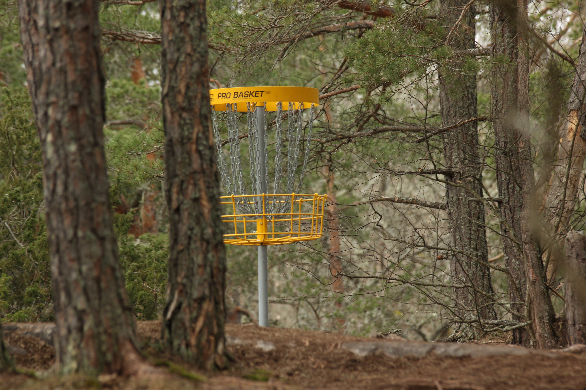
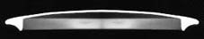
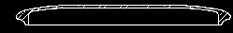
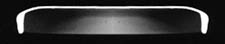

Présentation du Disc Golf
Chers amis Promeneurs,
Sans doute verrez vous durant votre promenade quelques objets métalliques non identifiés, ressemblant à ceci :

►
Non, ce n’est pas une oeuvre d’art contemporain ! Il s’agit d’une corbeille de « DISC GOLF ».
►
Le Disc Golf est une discipline sportive qui se pratique avec un « frisbee ».
Le Disc Golf créé aux Etats Unis dans les années 70 se pratique sur les mêmes bases que le Golf. Il s’agit d’effectuer un parcours de 9 ou 18 trous tracé généralement dans les grands parcs publics, en un minimum de lancers.
►
Au trou n°1, depuis la zone de lancement (située de 40 à 200 mètres de la corbeille) le joueur lance son disque le plus précisément et le plus loin possible.
Il se dirige vers le point de retombée, place un mini-disque devant son disque, reprend ce dernier et le relance depuis ce point. Il effectue ensuite une approche, puis à proximité de la corbeille, tente le coup final (putt).
Il note le nombre de lancers nécessaires puis passe au trou n° 2.
►
Lorsque plusieurs personnes jouent simultanément, le joueur qui a réalisé le moins de coups au trou précédent est le premier à lancer. En cas d’égalité, les résultats antérieurs font foi.
Pour les lancers suivants, le joueur le plus éloigné de la corbeille relance en premier. Les autres attendent derrière celui-ci pour ne pas le gêner.
►
Il est possible de rencontrer sur un parcours des zones interdites où le disque ne doit pas retomber. Dans ce cas, le disque est rejoué depuis l’endroit où il a pénétré dans cette zone et le lanceur reçoit un point de pénalité.
Le joueur peut à tout moment changer de disque selon le coup qu’il veut réaliser. Il existe différents profils de disques, de poids variables (145 à 180 g).

►
Le Drive.

►
L'Approche (ou midrange).

►
Le Putt.
Le vainqueur est le concurrent qui aura terminé le parcours en un minimum de lancers.
►
Chacun sera courtois envers l’autre : les joueurs préviendront de tous risques, les promeneurs ne ramasseront pas de disque à terre, le propriétaire n’étant sûrement pas loin : cet emplacement détermine la zone exacte du lancer suivant.
►
Cette discipline demande beaucoup de concentration. Aussi, à l’approche des lanceurs, le silence et la discrétion seront particulièrement appréciés.